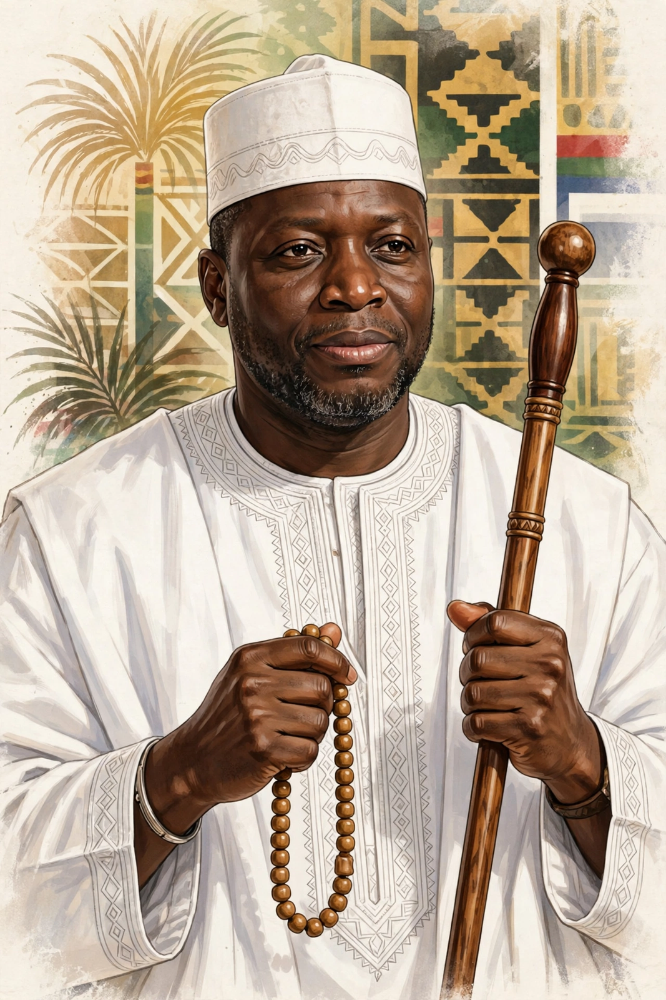

| Yahya Jammeh | |
|---|---|
 Jammeh during his presidency | |
| Born | 25 May 1965, Kanilai, The Gambia |
| Office | President of the Gambia, 1994–2017 |
| Party | Alliance for Patriotic Reorientation and Construction (APRC) |
| Status | In exile in Equatorial Guinea since 2017 |
Yahya Abdul-Aziz Jemus Junkung Jammeh (born 25 May 1965) is a Gambian politician and former military officer, who served as President of the Gambia from 1994 to 2017. He rose to power as chairman of the Armed Forces Provisional Ruling Council after leading the 1994 military coup that overthrew the government of President Dawda Kairaba Jawara, and went on to win four elections as the candidate of the Alliance for Patriotic Reorientation and Construction.
Jammeh's rule was characterised by authoritarianism, human rights abuses, and increasingly eccentric claims, including his 2007 announcement that he had discovered a herbal cure for HIV/AIDS. His government was accused of extrajudicial killings, torture, enforced disappearances, persecution of journalists, and the execution of nine death-row prisoners in 2012. He announced the Gambia's withdrawal from the Commonwealth in 2013 and declared the country an Islamic republic in 2015.
In the December 2016 presidential election Jammeh lost to Adama Barrow but refused to step down, triggering a constitutional crisis. Following the threat of military intervention by ECOWAS, whose forces entered the country in January 2017, Jammeh went into exile in Equatorial Guinea. The Barrow government established the Truth, Reconciliation and Reparations Commission (TRRC), which documented widespread abuses under Jammeh's rule and in 2021 recommended his prosecution. The Janneh Commission also found that Jammeh had looted hundreds of millions of dollars of state funds.